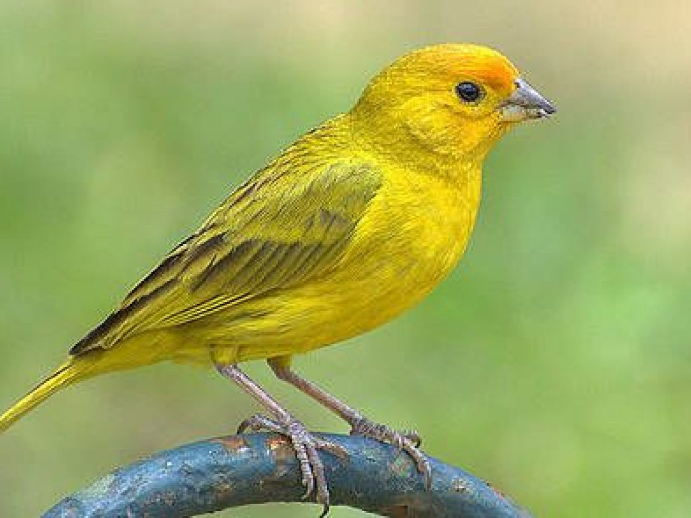

Aves domesticas!
Despu s de los perros y los gatos, los p jaros son uno de los animales de compa a m s elegidos. Cada vez m s personas optan por aumentar su familia y traer alegr a a su hogar con una de estas especies tan coloridas y divertidas. Son f ciles de cuidar y no requieren tanta atenci n, ya que no necesitan salir a la calle y pueden pasar m s tiempo solos. Aunque hay aves que son extremadamente sociables a las que tendr s que dedicarles tiempo cada d a.
Periquitos
Es una de las aves m s habituales y populares en el hogar. Es de peque o tama o y muy f cil de cuidar y domesticar. Son sociables y resultan ideales para iniciarse en el mundo de las aves como mascota si eres primerizo. Es una buena elecci n para los ni os y pueden vivir solos o en pareja, aunque siempre te recomendamos que tengan un compa ero para que se hagan compa a y puedan socializar con su misma especie. Te encantar n! Los periquitos miden entre 15 y 18 cm y tienen una esperanza de vida de unos 12 a os. La parte de arriba de su pico (cera) te ayudar a determinar si es macho o hembra cuando son adultos: si la tiene azulada, es macho, si es bronceada tirando a un rosa p lido, hembra.
Canarios
Populares por su canto y su color amarillo. Son amigables, aunque no tan sociables con el humano como los periquitos. El canto es sin nimo de que es feliz y est bien de salud. Si no te convence escuchar una melod a constante de gorjeos y trinos cada vez que pasas por su lado, ser mejor que te decantes por otra especie! Los canarios miden unos 13 cm y pueden vivir alrededor de 10 a os en cautividad.
Jilgueros
Los jilgueros son f ciles de distinguir entre el resto de p jaros por su bonito plumaje y su fuerte canto, a pesar de medir tan solo 12-15 cm. Podr s identificarlos por el color negro que rodea los ojos y la l nea roja sobre el pico. Son muy activos, por lo que necesitan una jaula grande con varias perchas o ramas para que puedan divertirse saltando de un lado a otro. Debes evitar los cambios de temperatura y las corrientes de aire para cuidar su salud, siendo adecuado un clima c lido. Su esperanza de vida es de 9 hasta 11 a os.
Ninfas
Estas simp ticas aves son una de las favoritas de los amantes de los p jaros. Son d ciles y juguetonas y disfrutan mucho del contacto. Necesitan una jaula grande con perchas para trepar y juguetes para estar entretenidas. Adem s, es recomendable que puedan salir y socializar un rato todos los d as. Podr s identificarlas a simple vista por su caracter stica cresta amarilla y sus mejillas naranjas. Este ave tiene un tama o aproximado de 35 cm y una esperanza de vida de unos 15 a os.
Cotorras
Las cotorras son peque os loritos cada vez m s comunes como mascotas. Adem s, no te extra es si las ves volando libres en los parques. Su introducci n y posterior suelta por parte de los humanos, unido a su alto nivel de adaptaci n y su facilidad para reproducirse, ha derivado en grandes colonias salvajes en numerosos pa ses (siendo considerada una plaga invasora). Son muy sociables, inteligentes y bastante habladoras (adem s de ruidosas). Su car cter es algo rebelde y, en ocasiones, destructivo, pero son cari osas y amigables. Miden 25-30 cm y su esperanza de vida es de 15 a 20 a os.
Loro gris de cola roja: Yaco
Como su nombre indica, es un loro completamente gris, a excepci n de las plumas de su cola que son rojizas. Que no te enga e con su aspecto apagado, es un loro alegre, sociable y especialmente hablador. Es una de las aves m s inteligentes (por delante de las cacat as y los guacamayos), capaz de memorizar y repetir much simas palabras y frases, siempre con sentido y no solo por imitaci n; seg n estudios, su nivel de inteligencia es comparable al de un ni o de cinco a os. Si no tienes tiempo suficiente para dedicarle, ser mejor que elijas otro p jaro dom stico, pues los yacos disfrutan inmensamente de la compa a, el juego y las caricias. Hablan mucho, pero no son muy ruidosos. Miden alrededor de 33 cm y tienen una esperanza de vida de unos 60 a os, pudiendo llegar incluso a los 100.
Guacamayo
Es la especie en la que la mayor a pensamos cuando nos hablan de loros. Destaca su gran tama o y su precioso plumaje en azul y amarillo o rojo y azul; son inconfundibles. Se caracteriza por ser un p jaro dom stico s per sociable, alegre y divertido. Adem s, tambi n tiene la capacidad de aprender y repetir palabras. Son muy cari osos y desarrollan un fuerte v nculo con su due o. Al igual que los anteriores, necesita una jaula grande y muchos juguetes para no aburrirse. Dedicarle tiempo todos los d as es imprescindible. Miden unos 50 cm y pueden llegar a vivir 70 a os.
Cuidados generales de las aves domesticas
- Agua limpia y fresca.
- Comida especial. Cada especie necesita una nutrici n espec fica, a base de semillas, alpiste, pienso, frutas
- Jaula limpia. Debes mantener el espacio de tu p jaro limpio para evitar las enfermedades y que su entorno sea lo m s higi nico posible. Cambia el lecho o peri dico cuando est demasiado sucio; con una vez a la semana es suficiente, pero depender de cada ave.
- Iluminaci n. Al igual que nosotros, es bueno que todas las aves tengan una dosis de sol diaria.